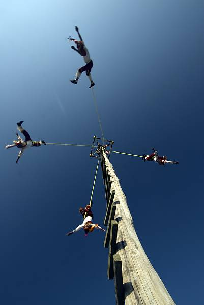
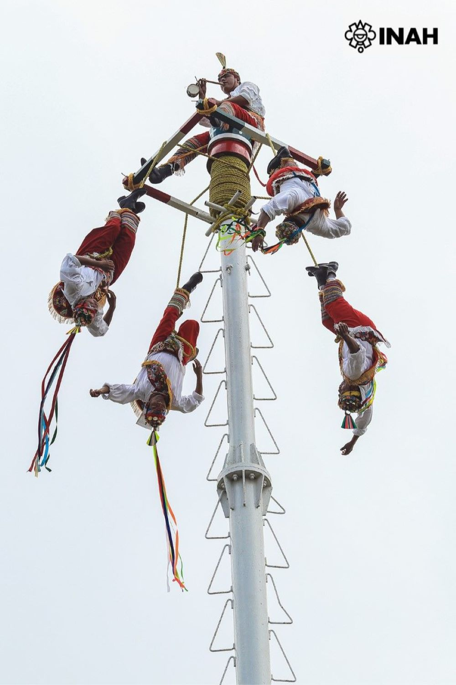

La ceremonia del folleto de Papantla, asociada a la fertilidad y compartida por varios grupos étnicos de México y Mesoamérica, es practicada por la cultura totonaca en Papantla, Veracruz, considerada la cuna del pueblo pájaro. Esta tradición existe desde la época prehispánica y resistió a la conquista española, que consideraba el ritual un simple juego debido a los trajes con plumas reales de águilas, búhos, cuervos y guacamayas que portaban los participantes.

Durante la ceremonia, cuatro jóvenes suben a una estructura de madera de 35 metros de altura que proviene del bosque y fue previamente solicitada por el Dios de la montaña. A la cabeza está un quinto hombre, llamado “Caporal”, que toca la flauta y el tambor y dirige melodías al sol y los cuatro puntos cardinales. Luego de este ritual, los jóvenes restantes, atados al tecomate (base giratoria) con cuerdas, se liberan de la plataforma y giran alrededor del poste, imitando el vuelo de las aves mientras se despliegan y descienden hasta alcanzar el suelo.

Datos relevantes:
La altura del mástil puede variar según donde se realice, por ejemplo en Tajín tiene una altura cercana a los 27 metros, en el Museo Nacional de Antropología de la Ciudad de México llega a los 25 metros, en la explanada de la iglesia de Papalotlá alcanza los 37 metros.